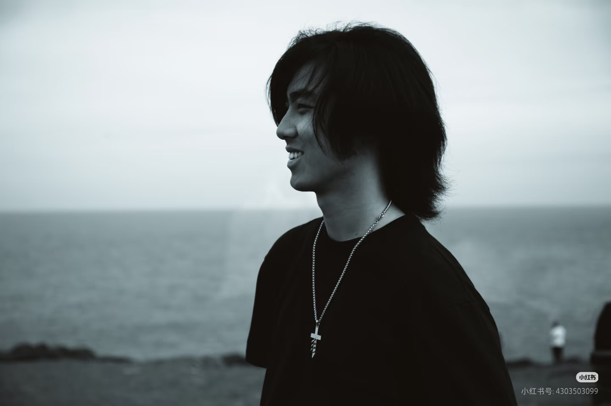

悉尼 | 境界
昵称Sky Fan
定位悉尼 / 中国上海
摄龄10+ 年
擅长风光摄影、街拍、人像纪实
邮箱2891413723@qq.com
理念以光影为诗，记录世间美好
专注自然光摄影，用镜头记录世间温柔与美好。
📸 摄影理念
我始终相信，最好的照片永远藏在真实的瞬间里。比起刻意的摆拍，我更偏爱捕捉那些未经雕琢的、自然流淌的美好——山野间的一缕晨光，城市街头的人间烟火，陌生人眼中一闪而过的情绪，这些都是我镜头下最珍贵的素材。
摄影于我而言，不是简单的记录，而是与世界对话的方式。每一次按下快门，都是在与当下的光影、人物、环境产生联结，试图定格那些稍纵即逝的「氛围感」。我偏爱自然光，因为它最真实；我专注纪实，因为生活本身就是最好的剧本。
我不追求极致的器材参数，也不执着于完美的构图法则。对我来说，一张好照片的核心是「有温度」——能让观者感受到按下快门那一刻，摄影师眼中的世界是什么样子。这也是我一直坚持的创作初心：用镜头看见温柔，记录真实。
⚙️ 常用器材
主力相机
CANON EOS 5Dmark III
风光镜头
CANON 16-35mm F2.8
人像镜头
CANON 27-70mm F1.4
街拍镜头
CANON 70-200 F1.4
三脚架
曼富图 Befree Advanced
后期工具
Lightroom / Photoshop / Capture One
📅 摄影经历
2014 - 2016
接触摄影，从入门级单反开始，自学构图与光影基础，主要拍摄家庭日常与身边风景。
2017 - 2019
专注风光摄影，走遍国内多个城市与自然景区，积累大量风光作品，开始形成个人风格。
2020 - 2022
移居悉尼，转向城市街拍与人文纪实，关注不同文化背景下的城市生活与人物状态。
2023 - 至今
融合风光与纪实风格，专注自然光人像创作，举办小型个人摄影展，与更多摄影爱好者交流学习。